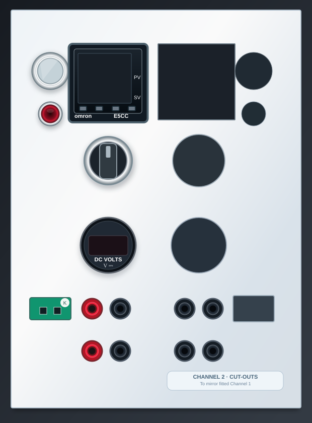

Engineering documentation · two-channel test equipment
Heating Rate Controller
Interactive operating and engineering manual · internal review v2
DESIGN REVIEW · NOT RELEASED FOR WIRING
System overview
Two independently controlled heater channels, with a shared 24 V control supply and separate external DC heater supplies. Based on the physical panel, the 198 × 248 mm Door v2 stencil and the ongoing D12 electrical review.
Two matched channels
Each channel includes an Omron temperature controller, maintained channel selector, illuminated enable button, activity indicator, DC voltmeter, thermocouple connector, PSU input and heater output.
Channel 1 fittedChannel 2 awaiting parts
Front connections
Per your confirmed physical arrangement: upper red/black pair = external PSU input; bottom red/black pair = heater output. The green connector is the Type K thermocouple input.
Up to 0–60 V DC, design maximum 15 A; connector rating/protection require verification.
Electrical review status
This site is an interactive draft, not a safety approval or energising procedure. The Finder 13.61 restart behaviour, fitted 62.31 socket, relay/SSR thermal limits, protection coordination, final pilot lamp and exact terminals still need sign-off.
Go straight to
Front-panel guide
Explore the illustrated panel or switch to the original workshop photograph. Channel 1 is fitted; Channel 2 is represented by its symmetrical cut-outs.

The illustrated layout is a guide, not a product photograph or dimensioned CAD. Select Original photo to see Channel 1 as fitted. Its selector is a temporary substitute for the final Schneider.
01 · channel control
Heater enable pushbutton
Suggested physical marking
HEATER ENABLE
Further notes
Electrical overview
Functional illustrations for understanding the system. These are not replacements for the numbered, manufacturer-verified wiring sheets.
Shared control supply and two branches
The Mean Well is shared and must not be powered through either channel's individual selector.
Each channel — external DC heater path
Finder 14 (−) and Crydom −2 are polarity-labelled switched-positive terminals, not DC 0 V terminals.
SSR command and activity indicator
Omron's control-demand output drives the Weidmüller interface. The Weidmüller output is intended to switch the 24 V SSR input and a suitable 24 V activity LED in parallel, within its rated 100 mA current limit. The LED reports a command, not measured heater current.
Front-panel labels
Recommended short physical labels with consistent references. Confirm final lettering positions against the fitted components before engraving.
Channel 1
Ref
Suggested label
SB1
HEATER ENABLE
HL1
HEAT ACTIVE
E1
CH1 TEMP
S1
CH1 CONTROL ON/OFF
PV1
CH1 DC VOLTS
JTC1
CH1 TC INPUT
JP1 · upper pair
CH1 PSU IN + / −
JP2 · bottom pair
CH1 HEATER + / −
Channel 2
Ref
Suggested label
SB2
HEATER ENABLE
HL2
HEAT ACTIVE
E2
CH2 TEMP
S2
CH2 CONTROL ON/OFF
PV2
CH2 DC VOLTS
JTC2
CH2 TC INPUT
JP3 · upper pair
CH2 PSU IN + / −
JP4 · bottom pair
CH2 HEATER + / −
The small red lamp role is provisional pending electrical sign-off. Do not engrave an unverified function into the actual enclosure yet.
Standard operating procedure
Provisional operator sequence, for review and training only. The final SOP must incorporate approved protection, emergency isolation and the tested fail-safe power-restoration behaviour.
Not yet an energising instruction
Do not use this draft as authorisation to connect or run a 15 A heater. The design review blockers must be resolved, documented and independently checked first.
01 · Pre-use checks
1
Confirm the test setup
Load and heater suitability, wiring inspection, thermocouple integrity and isolation arrangements.
2
Identify the two DC connector pairs
Upper pair = incoming external PSU. Bottom pair = outgoing heater. Never interchange the two.
3
Check instrument configuration
Verify PV reading, sensor type, output mode, programme/setpoint, and external PSU limits against the approved test plan.
02 · Functional sequence
4
Establish control power
After installation validation, controller supply and selected channel controls become available.
5
Confirm channel enable state
Use the momentary button only once the Finder 13.61 behaviour and lamp indications are validated.
6
Observe demand and temperature
Monitor Omron PV/SV, expected voltage and the heating-demand indicator; do not assume the lamp proves heater current.
03 · Stop, isolate, record
End heater demand and disable the relevant channel using the validated shutdown sequence. Isolate the external heater DC supply and mains when safe; verify the zero-energy condition before changing connections. Record any fault, unexpected heating or abnormal temperature transient. Emergency-off handling must be defined in the approved site procedure.
Sequence of operation
This explains the intended functional relationship, not a verified automatic safety sequence.
1. Mains present
Inlet, fuse/switch and distribution power the internal 24 V PSU.
2. Controller available
CH1 or CH2 Schneider selector gates its controller/control branch.
3. Enable requested
EAO pulse is processed by Finder 13.61; actual persistence/reset requires test.
4. Heating demanded
Omron output indicates a requirement for heater power.
5. SSR commanded
Weidmüller interface drives SSR input and suitable activity LED.
6. DC heater energised
External PSU, protection, Finder DC contact, SSR and heater complete the intended load path.
Power restoration requires verification. After loss and return of 24 V, the heater must remain disabled until deliberately re-enabled. That behaviour has not been signed off for Finder 13.61, so this manual does not claim it is implemented.
Omron E5CC setup and autotune
Step-by-step topics to work through once the exact fitted controller variants and approved heat-control method are confirmed. Do not copy assumed settings into a live test.
Controller setup checklist
Record the full controller part number and firmware/parameter availability.
Select the correct thermocouple type and temperature units.
Confirm PV input scaling and sensor-fault indication.
Choose the intended heat/cool action and output mode.
Verify control period and output assignment for SSR control.
Set and record required temperature target/program settings.
Review alarms and fault responses.
Save a known-good configuration sheet for CH1 and CH2.
Autotune checklist
Use the installed heater, thermocouple location and a representative safe load.
Confirm electrical protections and the possibility of overshoot are addressed.
Choose a representative setpoint and establish stable conditions.
Follow the model-specific Omron autotune procedure in the official manual.
Allow a complete tune without changing wiring or sensor placement.
Record the resulting control parameters and validate response.
If the system oscillates or overshoots, diagnose before further tuning.
The final interactive programming guide will include exact Omron menu steps and approved parameter values after the intended heating profile and controller variants are confirmed.
Component register
Electrical parts currently documented in the design review. The physical meter and some connector/socket variants remain to be identified.
E1 / E2
Omron E5CC
Temperature controller, one per channel
PS1
Mean Well XDR-120E-24
Shared 24 V control supply
S1 / S2
Schneider XB5AD23
Maintained channel selectors, final intended part
SB1 / SB2
EAO illuminated pushbutton
Momentary enable command
K1 / K2
Finder 13.61
24 V impulse/step relays
K3 / K4
Finder 62.31.9.024.4800
24 V coil, polarity-sensitive DC power contact
SK3 / SK4
Finder 92.03 socket family
Exact fitted suffix to confirm
W1 / W2
Weidmüller 8950770000
12 V input / 24 V SSR + LED interface
SSR1 / SSR2
Crydom DR2220D30U
DC solid-state power switching
QF1 / QF2
Lovato P1MB1PC16
16 A DC protective devices; coordination outstanding
JTC1 / JTC2
Type K panel connectors
Thermocouple interface
PV1 / PV2
Round DC voltmeters
Part number and electrical connections to confirm
Manufacturer documentation
Official documentation links. The documents open online; downloadable PDF copies are not yet bundled into this website.
Some links lead to manufacturer product pages or manuals for an entire series rather than a model-specific PDF. Verify suffix-specific ratings before use.
Outstanding verification
Do not mistake the polished interactive interface for completion of the electrical design review.
Confirm physical Finder 62.31 socket suffix and its correct terminal map.
Test Finder 13.61 fail-safe OFF on 24 V restoration, including possible interaction with external PSU switching.
Confirm the correct Omron parameter set and response to test transients.
Check relay/socket, breaker, cable and front connector ratings at up to 15 A DC.
Validate SSR thermal derating, mounting and protection.
Confirm wiring of the small red indicator lamps and Weidmüller output polarity.
Finalise distribution blocks, PE bonds and emergency isolation.
Review complete point-to-point schematics before energising any heater.